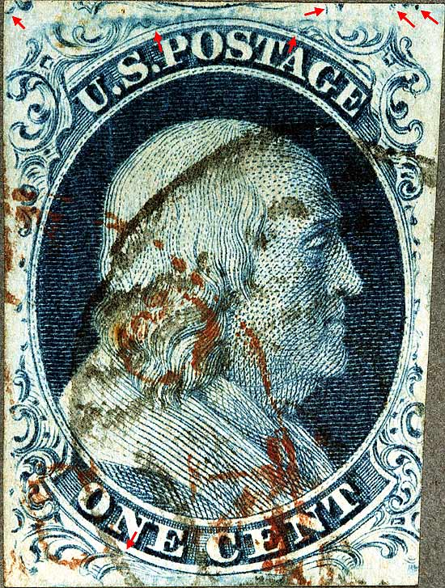
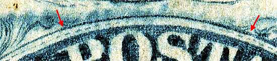
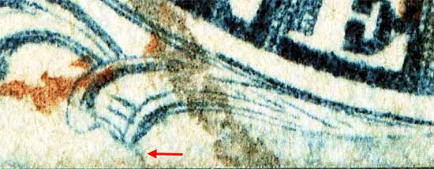
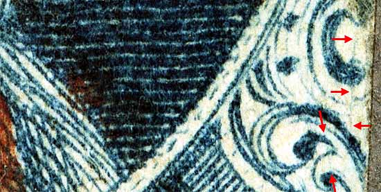
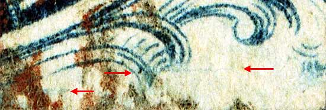
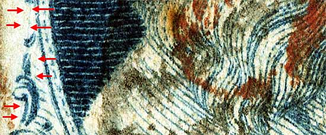
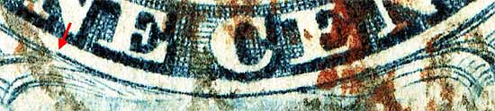

1¢ Franklin Issue of 1851-1857, PLATE 1 LATE Position 32R1L |
| Scott #9 Blue, Type IV, Relief A Issued both imperforate and perforated. Perforated copies are more scarce. SINGLE RECUT TOP, This is an interesting position as Neinken only shows the top and bottom recut lines highlighted and no other marks for plating. Several authors state that single copies of "A" relief positions are more difficult to plate and if margins are tight it can be impossible. Luckily, several marks from adjoining positions can be seen and this position found it's proper place in the Archive. There are several marks which I found on the stamp that await confirmation by other students of this issue. Upper most red arrows indicate known plating marks from POSITION 22R1L. |
|  |
| Figure 1. (Below) Red arrow indicates approximate start and end of the RECUT TOP LINE.
 |
| Figure 2. (Below) Red arrow to the left indicates a blurry diagonal line. This is not shown on the plating diagrams and at this time it is not certain if it is consistent.
 |
| Figure 3. (Below) Red arrows indicating faint vertical scratches or lines. These are not shown in the Ashbrook plating drawings and at this time it is not certain if it is consistent.
 |
| Figure 4. (Below) Red arrow indicating faint horizontal scratches of color. These are not shown in the Ashbrook plating drawings and at this time it is not certain if it is consistent.
 |
| Figure 5. (Below) Red arrows indicating faint vertical plate scratches. These are not shown in the Ashbrook plating drawings and at this time it is not certain if it is consistent.
 |
| Figure 6. (Below) Bottom recut curved line.
 |
DISCLAIMER and COPYRIGHT INFORMATION: Thanks for visiting this site. I hope you learn something new as we are making new discoveries all the time. You, the visitor, have my permission to link to my pages and to share the INFORMATION with others. The images themselves fall under the fair use guidelines established by the United States Congress and Copyright law. Basically contact us before using. I also ask in return that you send me an e-mail if I have made a mistake, or have made some other technical blunder that in my rush to put these pages up would cause the visitor confusion. Please also visit my other website at www.slingshotvenus.com. and support the live music arts. While your there, be sure to purchase our music. There are not many philatelic rock stars around and we need all the help we can get. :-) I can be reached at: nerdman@ix.netcom.com Update 2.12.2012 |